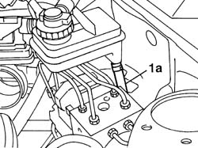
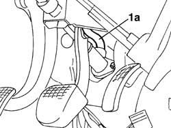
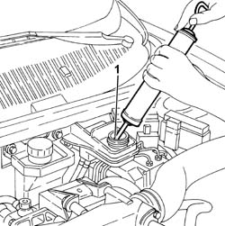
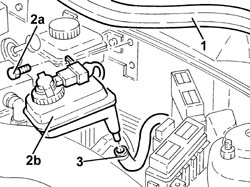
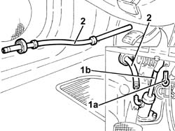
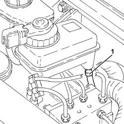
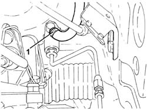
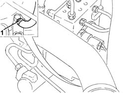

1820B40 FLEXIBLE PIPE from clutch reservoir to (pump) - master cylinder R.R.
- Path
- Procedures > 18 CLUTCH > 1820 CLUTCH RELEASE CONTROLS > 1820B HYDRAULIC CLUTCH SYSTEM > 1820B40 FLEXIBLE PIPE from clutch reservoir to (pump) - master cylinder R.R.
- Kind
- repair procedure (removal / refitting; the operation number is the code)
- Applies to
- engines: 1.6 TS , 1.8 TS, 2.0 JTS, 2.5 V6, 1.9 JTD 8v , 1.9 JTD 16v, 2.0 JTS, 2.4 JTD 10v, 2.4 JTD 20v; all production periods
- Interactive page
- https://sloeber94.github.io/elrnDB-a156/en/#/3237900
Applies to: engines: 1.6 TS , 1.8 TS, 2.0 JTS, 2.0 JTS; all production periods
 Removing
Removing
 Refitting
RefittingUse a syringe to suck brake-clutch fluid out from the tank.
1. Disconnect from tank (1a) the hose connecting tank to master cylinder.
To ease the insertion of the hose at reassembly, tie the hose with a wire and use it as a guide to refit the hose.

Applies to: engines: 1.6 TS , 1.8 TS, 2.0 JTS, 2.0 JTS; all production periods
1. Disconnect the delivery hose from the slave cylinder (1a).
Pull the seal off from the partition wall between engine compartment and passenger's compartment, and pull the hose out leaving the wire tied to it to be used as a guide.

Applies to: engines: 1.6 TS , 1.8 TS, 2.0 JTS, 2.0 JTS; all production periods
Refitting
RemovingUsing the guiding wire tied to it, pull the hose into the engine compartment.
Refit the seal on the partition wall between engine compartment and passenger's compartment.
Connect the hose to brake-clutch fluid tank.
Connect the hose to master cylinder.
1820B08 Clutch release HYDRAULIC SYSTEM - Bleeding air and restoring level
Applies to: engines: 2.5 V6, 1.9 JTD 8v , 2.4 JTD 10v; all production periods
Removing
Refitting1. Drain the brake-clutch fluid from the reservoir using a suitable syringe.

Applies to: engines: 2.5 V6, 1.9 JTD 8v , 2.4 JTD 10v; all production periods
1. Remove the engine bulkhead seal.
2. Undo the bolts (2a) and remove the brake-clutch fluid reservoir (2b).
3. Disconnect the hose from the reservoir to the master cylinder from the reservoir.

Applies to: engines: 2.5 V6, 1.9 JTD 8v , 2.4 JTD 10v; all production periods
1. Remove the split pin (1a) and disconnect the master cylinder rod (1b) from the clutch pedal.
2. Disconnect the hose from the reservoir to the master cylinder on the master cylinder side and remove.

Applies to: engines: 2.5 V6, 1.9 JTD 8v , 2.4 JTD 10v; all production periods
Refitting
RemovingFit the hose from the reservoir to the master cylinder and connect to the master cylinder.
Connect the master cylinder rod to the clutch pedal and secure it with its split pin.
Connect the hose from the reservoir to the master cylinder.
Refit the brake-clutch reservoir in its seating and secure with its bolts.
Place the engine bulkhead seal back in its seating.
Applies to: engines: 1.9 JTD 16v; all production periods
Removing
RefittingProceed with removal 1016A10 sound-proofing cover - r + r
Proceed with removal 5530B10 battery - r+r
Proceed with removal 5530B52 Battery DRIP TRAY/SUPPORT - R.R.
Remove the protective cap on the master cylinder bleed valve.
Connect the collection system (pipe and reservoir) to the bleed valve on the clutch operating cylinder.
Operate the clutch pedal until the brake-clutch fluid reservoir is empty.
1. Loosen the band and disconnect the flexible pipe from the clutch reservoir to the master cylinder, reservoir side.

Applies to: engines: 1.9 JTD 16v; all production periods
1. Loosen the band, disconnect the hose from the clutch reservoir to the master cylinder on the master cylinder side and remove it.

Applies to: engines: 1.9 JTD 16v; all production periods
Refitting
RemovingPlace the flexible pipe from the clutch reservoir to the master cylinder back in its housing and tighten the bands.
Bleed the air and top up the level in the hydraulic clutch system 0010T67 hydraulic clutch system bleed air .
Top up the brake-clutch fluid level 0010T65 hydraulic brake system bleed air .
Proceed with refitting 5530B52 Battery DRIP TRAY/SUPPORT - R.R.
Proceed with refitting 5530B10 battery - r+r
Proceed with refitting 1016A10 sound-proofing cover - r + r
Applies to: engines: 2.4 JTD 20v; all production periods
Removing
RefittingProceed with removal 1016A10 sound-proofing cover - r + r
Proceed with removal 5530B10 battery - r+r
Proceed with removal 5530B52 Battery DRIP TRAY/SUPPORT - R.R.
Remove the protective cap on the master cylinder bleed valve.
Connect the collection system (pipe and reservoir) to the bleed valve on the clutch operating cylinder.
Operate the clutch pedal until the brake-clutch fluid reservoir is empty.
1. Loosen the band and disconnect the flexible pipe from the clutch reservoir to the master cylinder, reservoir side.
Applies to: engines: 2.4 JTD 20v; all production periods
1. Loosen the band, disconnect the hose from the clutch reservoir to the master cylinder on the master cylinder side and remove it.

Applies to: engines: 2.4 JTD 20v; all production periods
Refitting
RemovingPlace the flexible pipe from the clutch reservoir to the master cylinder back in its housing and tighten the bands.
Bleed the air and top up the level in the hydraulic clutch system 0010T67 hydraulic clutch system bleed air .
Top up the brake-clutch fluid level 0010T65 hydraulic brake system bleed air .
Proceed with refitting 5530B52 Battery DRIP TRAY/SUPPORT - R.R.
Proceed with refitting 5530B10 battery - r+r
Proceed with refitting 1016A10 sound-proofing cover - r + r